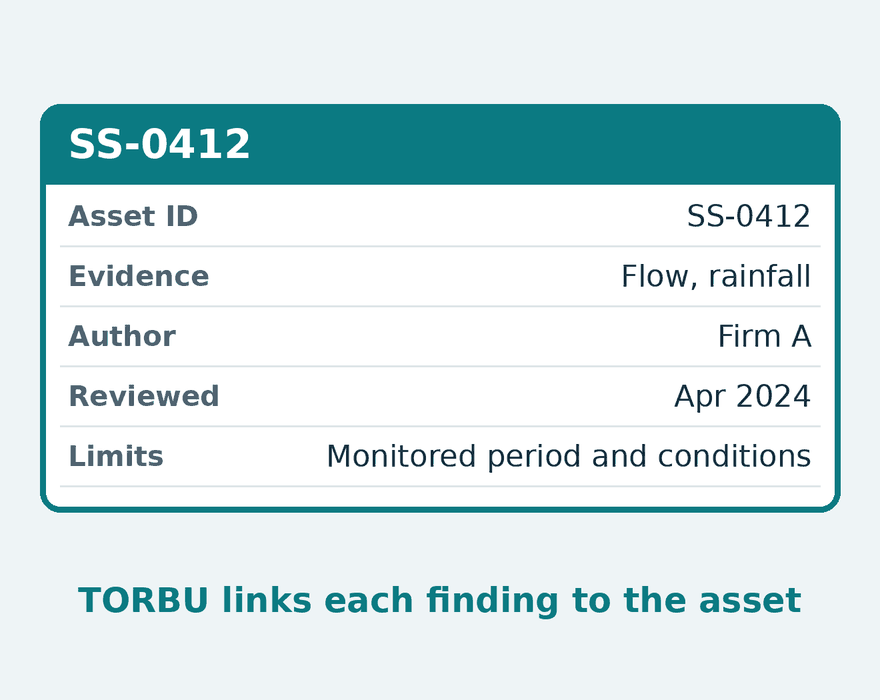
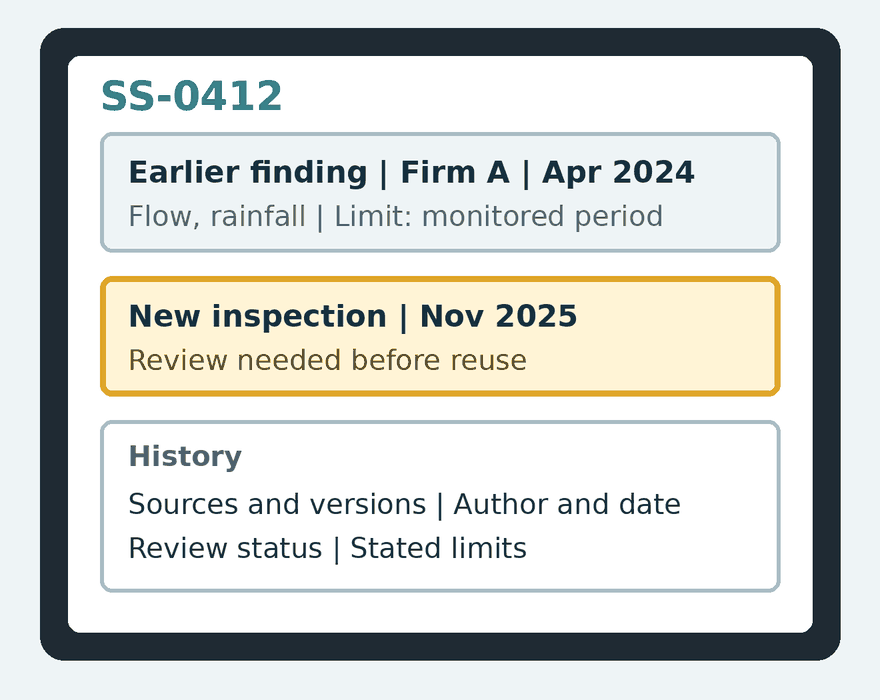
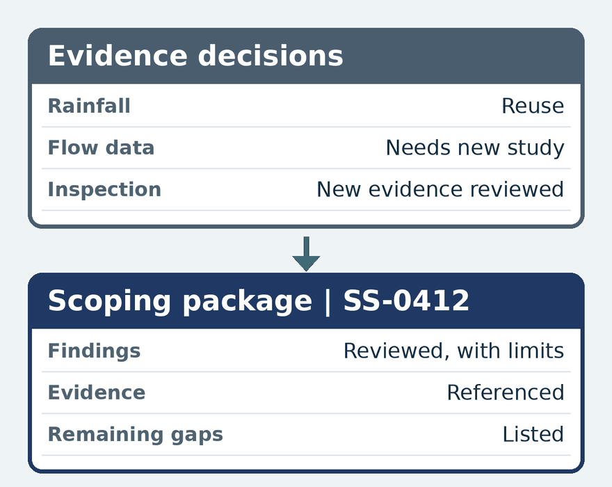

01 · Earlier workFirm A records its finding.
The finding links to its flow, rainfall, and inspection evidence. The record shows versions, authors, dates, method, review status, and limits.
Water infrastructure
A shared asset record keeps evidence, findings, and reviews connected as projects and firms change.
A concept prototype is available for private walkthroughs.
The handoff problem
Asset management systems track the asset. Engineering context often stays in project files. The next team must rebuild it from old reports and files.
An asset record tells you what happened. TORBU also keeps what earlier work concluded, why, by whom, under what limits, and whether it still applies. Qualified engineers decide what to reuse and what needs further investigation.
An illustrative example
An inflow and infiltration (I/I) workflow for sewer segment SS-0412.

01 · Earlier workThe finding links to its flow, rainfall, and inspection evidence. The record shows versions, authors, dates, method, review status, and limits.

02 · A new assignmentA new inspection triggers an update check. With authorized access, Firm B reviews the new inspection and records what it can reuse, what needs limits, and what needs new work.

03 · Project outputA scoping package collects reviewed findings, evidence references, limits, and gaps. Firm B records its own decisions. Firm A’s finding stays unchanged.
Fictional asset and scenario. The prototype simulates this workflow. The same record applies to wells, pipelines, tanks, and sewer assets. Qualified engineers stay responsible for their findings.
Working alongside existing systems
TORBU works alongside asset management systems (EAM or CMMS), GIS, and firms’ project tools. The record links findings to the utility’s asset identifiers. Evidence arrives as files, references, or checked manual entries.
Source records stay in their existing repositories under agreed access, version, and retention terms. We scope and test any direct system connections separately.
Next step
We want to hear how evidence and findings carry into the next project and where the handoffs get difficult. Then we can test whether TORBU fits.
We can walk through a concept prototype and explore a relevant project or workflow together.
Use the contact form to tell us what you’re working on.